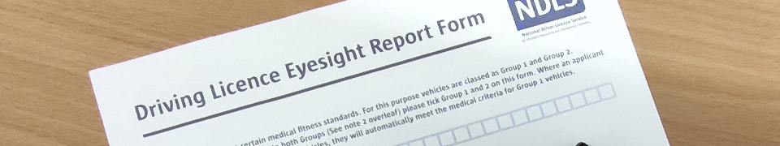

What is FLX?
FLX is an informational tool designed to prepare you for your driving licence exchange process.
Let's simplify your foreign driving licence exchange process today!
Am I Eligible?
In order to be eligible for an Irish driving licence you have to be a resident in Ireland and have the right to remain in Ireland. You also need to be able to prove your identity and PPSN. The following example should give you a good idea of what an applicant can submit to prove all this.
Example Applicant
- Photo ID: EU Passport
- PPSN Proof: Letter from Revenue
- Address Proof: Irish Bank Statement which is dated within 6 months of the application
- Residency Entitlement: EU Passport
1. Photographic ID
- Public Services Card
- Irish passport/passport card (current or expired by no more than 12 months)
- Most recent Irish driving licence or learner permit
- Current passport for all non-Irish citizens (valid for international use)
- Current national identity card for EU/EEA/Swiss citizens
- Irish Certificate of Naturalisation
- Current UK photo driving licence
- Current Irish travel document
2. Evidence of PPS number
- Public Services Card/Social Services Card
- Correspondence from Revenue/Department of Employment Affairs and Social Protection showing PPS number
- P21/Tax Assessment/ Notice of Tax credits
- Receipt of social welfare payment which shows full PPS number
- Medical card / Drug Payment Scheme (DPS) card / European Health Insurance card
- Payslip or P60/P45
3. Evidence of address(dated within six months)
- Public Services card
- Utility bill - Mobile phone bills are not acceptable
- Statement or other correspondence from bank/building society/credit union including eStatements
- Letter from Government Department or State Agency
- Correspondence on headed paper from an educational or training body e.g. a secondary school; university; institute of technology or college
- Correspondence from an insurance company regarding an active health/life/house/car insurance policy
4. Evidence of normal residence
- Public Services Card - where place of birth or nationality is within EU/EEA/Switzerland
- Irish/UK (long-form) birth certificate or adoption certificate
- Driving licence/learner permit where field 3 shows place of birth is within EU/EEA/Switzerland
- Certificate of entry in the Irish Foreign Births Register
- Irish passport/passport card (current or expired by no more than 12 months)
- Current passport for all EU/EEA/Swiss citizens (valid for international use)
- Current national identity card for EU/EEA/Swiss citizens
- Irish Certificate of Naturalisation
- Current certificate of registration (Garda National Immigration Bureau/GNIB card) or Irish residence permit (IRP) for non- EU/ EEA/Swiss citizens (The GNIB and IRP cards must be presented with a current passport valid for international use or with a Public Services Card)
If you can satisfy these requirements, congratulations. You are eligible for an Irish driving licence.
Can My Licence Be Exchanged?
Finding out if your licence is eligible is simple. First you need to ensure that your country exchanges with Ireland.
All EU member states have a licence exchange agreement. This means that if you hold a licence from Poland, you can exchange it in Ireland because both countries are in the EU.
Recognised states from outside of the EU such as Australia & Japan, can also exchange. Find a full list of Recognised States here .
Please note that if your licence is from a recognised state, you will need to provide an Eyesight Report.
If your licence has a group 2 category on it, such as a C or D licence category. You will need a Medical Report from your doctor in order to exchange. However, if you don't want to exchange these categories you can submit a Declaration to Surrender Categories form. This way you can exchange just your group 1 categories which include; motorcycles, cars, cars with trailers and tractors.
What Can I Expect On The Day?
It is recommended that you arrive at the center 5-10 minutes prior to your appointment time. Please ensure that you check the text message from the NDLS that you received after confirming your appointment. If you didn't receive a text message or an email confirming your appointment, it is likely that you did not submit your request for the appointment.
When you arrive, please check in with the friendly staff member at the front entrance as they will guide you to join the queue. Please leave any queries for the Verification Officer, this is the person validating your application in the booth.
Once you're in the booth, you'll be asked to submit your application form and your licence. The Verification Officer will check everything for you to ensure your application passes smoothly and without issue. They may ask to see additional documentation that you have brought, such as proof of address, eyesight report etc.
Your photos will be taken in the booth once the Verification Officer is happy with all the documentation you provided. There is no need to bring your own photographs as they cannot be used.
Payment will also be taken at this point. Foreign licence exchange usually costs €55, however if the applicant is over 70 years of age. The application is taken free of charge.
Please be advised that currently only card payments are acceptable. No cash.
Common Issues & Mistakes
Please read some of the most common issues that applicants run into. This can save you a trip to the NDLS as you'll need a new appointment if you run into them yourself.
- Make sure you have booked your appointment successfuly. If you have not received a text message or an email confirming your appointment you likely didn't submit your request correctly.
- Ensure that your doctor/optician has filled in all the required fields on your report. Small mistakes like dating your report for the year 2020 instead of 2021 or entering in today's date instead of your date of birth will result in your application being rejected as only the issuing party can alter your report.
- If your licence is lost you will need to bring alternative photo ID and have a Garda Declaration form to submit.
- If you have a licence from a country like New Zealand or Canada where it is not clear whether you passed your test for an automatic/manual car, you will need a Letter of Entitlement from the issuing driving authority.
- If your licence is not in English, you will need a letter of entitlement along with a certified translation to submit as part of your application.
All Set?
If you're confident that you have everything you need, you can proceed to the forms page to print relevant forms or book your appointment.